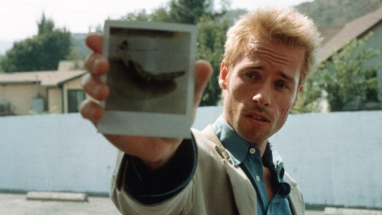

Briefly stated, the Gell-Mann Amnesia effect is as follows:
You open the newspaper to an article on some subject you know well. You read the article and see the journalist has absolutely no understanding of either the facts or the issues. Often, the article is so wrong it actually presents the story backward — reversing cause and effect. I call these the “wet streets cause rain” stories.
Paper’s full of them.
In any case, you read with exasperation or amusement the multiple errors in a story, and then turn the page to national or international affairs, and read as if the rest of the newspaper was somehow more accurate about Palestine than the baloney you just read.
You turn the page, and forget what you know.
